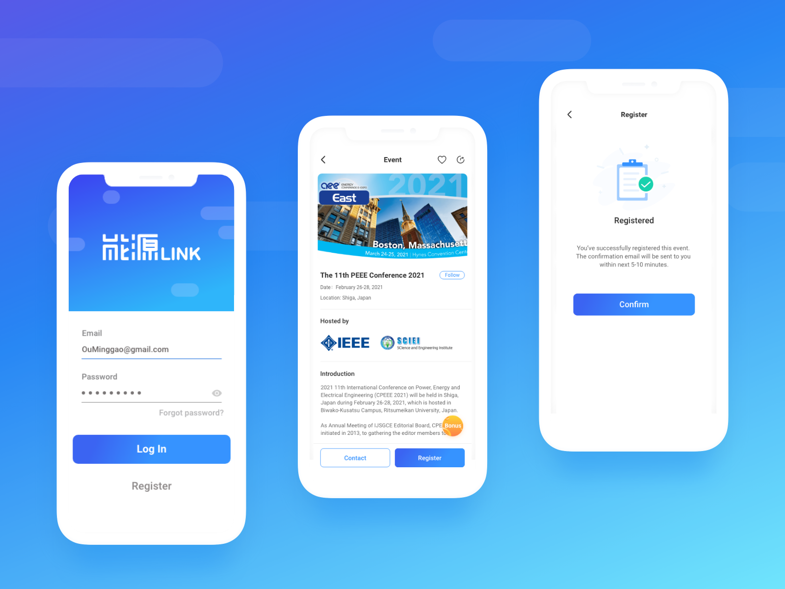

Energy Link
An app designed for creating a cross-border professional service platform for energy industry practitioners.
Team
Designers, PM, Developers
Tools
Figma, Whimsical, AE
Tags
Product Design, User Research, UI/UX
Timeline
Three Months
INTRODUCTION
Project Overview
Energy Link is the mobile application developed by China Energy Net which is China's most visited and influential energy industry portal. It’s designed as a one-stop learning exchange platform in energy filed.
In recent years, the energy industry has closely followed the trend of mobile terminal to develop mobile application products. However, it may be due to the traditional and serious industry attributes of energy industry itself, apps on energy topics are still very limited. For example, some apps only provide energy news, and some apps only focus on customized energy services for energy companies themselves. Therefore, this leads to a very single and boring type of app products in the energy industry on the market. China Energy Net, where I worked previously, found this opportunity, and wanted to combine its strong background and popularity in the energy field to develop and create a cross-border professional service platform for all energy industry practitioners that integrates multiple product functions.
HOW IT BEGINS
Design Challenge
How might we design a unique cross-border professional service platform for the energy industry practitioners?
Solution
Our solution focuses on a way to design a one-stop learning and communication platform in energy filed. With this app, energy industry practitioners could exchange professional knowledge and technical experience, browse the latest news, meet authoritative experts, comment on the hot topics of the industry, watch experts’ lectures, download conferences’ relative materials and more.
User Interview & Survey
Since I didn’t know much about the energy industry, I first conducted interviews with four energy industry practitioners to see what products and functions they expect. I learned that the current mobile app products for energy industry are pretty limited. Users urgently need an innovative product that is exclusive to the energy field and combines multiple functions such as browsing news, gaining information, learning, communicating and social networking.
Their responses helped me gauge what the immediate thoughts of some users were and their core needs. Although these aren’t quantifiable, it gave me valuable insight into what is currently working and what is not.
SECONDARY RESEARCH
Competitor Analysis
After the user interview, I conducted research on competitive products in the same industry.
Out of all the competing apps I looked at, Inno Spring and Sinopec are the best. Both provide industry news and information, event column and expert lectures, but when I interviewed energy industry practitioners, they said that in addition to industry information, users prefer to use the app as a platform to learn professional industry knowledge, communicate thoughts and share information with other professionals and enthusiastics in the same industry. Therefore, in addition to industry information, functions such as social networking, content creation, and industry professional materials are also core needs of users.
In addition, Inno Spring also provides industry training column. However, according to interviewees and my in-depth research on this issue on the Internet, most of the energy industry training is independently contracted and held by several leading companies. Industry professionals are organized by companies to participate in training every year, so providing training information in the app is of little significance.
IDEATION
Ideating the App
Then, I started brainstorming and ideating the potential features by writing down some initial ideas on sticky notes and put them all on the wall.
After finishing all sticky notes, I categorized them and summarized into the following five main functions.
User Flows
Then, I created a user flow within the app’s key features. The user flow lays out the user's movement through the mobile app, mapping out each and every step the user takes—from entry point right through to the final interaction.
WIREFRAME
Sketching the Interface
After ideating the app, I began sketching wireframes of the new solution. The purpose of the low fidelity sketches was mainly to ensure hierarchy, design goals, and make sure that I was using the proper components for each function.
PROTOTYPE
Visual Design
Now, with a clear wireframe, I began exploring with different color themes to get an initial idea of how the mobile design should "feel" like. After looking many examples, I found that blue is still the most universally favored color for business. It relates to trust, honesty and dependability, therefore helping to build customer loyalty. The energy industry is inherently more traditional and rigid, so I decided to use the combination of blue and white color scheme to make the overall page look concise and professional.
Final Output
The final product provides user a cross-border professional service platform of energy industry that combining the functions of browsing latest industry news, registering recent events, information, social networking with industry insiders, expressing personal insights, learning professional knowledge & technical experience, downloading relative materials.
Additionally, user are offered paid membership to enjoy special benefits. User can also win extra bonus of free membership by inviting friends to join specified events. Meanwhile, there are functions such as real-name verification to increase the reliability and security of using the app.
Reflection
This is the first task that I officially took over after entering the company. The design process was completed by myself independently. During the period, I had close communication and cooperation with the product manager and development department. Throughout this experience, I got to wear many different hats and learn about many things — research methods, service design, scoping out problems.
It was a very complex problem space, so I had to learn how to consolidate a lot of information and ideas into an actionable solution. It was different than any design work I did in the past — there was more focus on the process and laying down the groundwork for future design work.
And, since I was conducting research that was useful for multiple projects across the product line, I also learned about the importance of communication. This was an area people knew little about, so it was important to create meaningful and digestible artifacts to share my work with other teams.
Overall, the company invested a lot of energy in the development and design of this product, and finally my design outcome was satisfied and recognized by both the company and the user, which made me feel very motivated and blessed.
Metrics üëÄ
Currently looking into the data of this new designs. Please come back to this case study at a later date to view!
Thanks for Reading ❤️
If you’d like to hear more about my experience, feel free to send me an email–I’d love to chat ☕.
My Other Projects
If you'd like to see more, check out my other projects below!